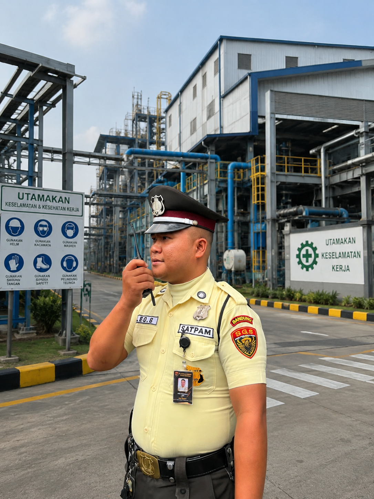

PT. Sentra Garuda Cakra Pratama (SGS) menghadirkan integrasi pengamanan fisik profesional dan manajemen fasilitas gedung berstandar baku untuk menjaga kelancaran operasional bisnis Anda.
Security & Guarding Services
Satuan pengamanan bersertifikasi resmi Mabes Polri (Gada Pratama & Madya), disiplin tinggi, berintegritas, dan siap menjaga aset industri, perkantoran, perbankan, serta residential.
KTA & Ijazah ResmiSOP Standar PolriPenjagaan 24/7
Professional Office Boy
Tenaga pendukung kebersihan kantor terlatih, berpenampilan rapi, dan beretika prima dalam menciptakan lingkungan kerja higienis, nyaman, dan mendukung produktivitas perusahaan.
Higienis & RapihEtika PelayananMonitoring Rutin
Patroli Siaga & Reaksi Cepat
Didukung armada mobil operasional siaga 24 jam nonstop untuk inspeksi mendadak, pengawalan khusus, tanggap darurat (quick response), dan koordinasi kewilayahan Polri & TNI.
Unit Patroli 24/7Respon Cepat TanggapKoordinasi Wilayah
Event Security & VIP Escort
Layanan proteksi khusus figur VIP/VVIP, sterilisasi area kegiatan akbar, manajemen massa (crowd control), serta mitigasi risiko untuk kelancaran agenda korporasi skala besar.
Pengawalan VVIPSterilisasi AreaCrowd Management
Manajemen Risiko & Audit SOP
Konsultasi mitigasi kerawanan area kerja, penyusunan blueprint SOP pengamanan kustom, audit fisik fasilitas berkala, serta evaluasi kepatuhan performa operasional terukur.
Audit KerawananBlueprint SOP KustomSolusi Terukur
Legalitas & Sertifikasi Resmi:
Ijin Operasional MABES POLRI
Terdaftar Resmi Ketenagakerjaan (DISNAKER)
Anggota Asosiasi Pengamanan (APSI / ABUJAPI)
Koordinasi Wilayah POLDA & TNI
Pencapaian & Skala Operasional
KEUNGGULAN OPERASIONAL DALAM ANGKA
Komitmen berkelanjutan PT. Sentra Garuda Cakra Pratama dalam memberikan proteksi maksimal dan layanan fasilitas prima bagi mitra korporasi di seluruh Indonesia.
0+
Personel Aktif
Satpam bersertifikasi resmi Mabes Polri dan Office Boy profesional siap penugasan.
0+
Klien Korporasi
Dipercaya menangani pengamanan perbankan, manufaktur, rumah sakit, properti & BUMN.
0+
Provinsi Jangkauan
Cakupan pos pengamanan, mobilitas operasional, dan koordinasi terpadu lintas daerah.
0%
Tingkat Kepuasan
Tingkat kepatuhan SOP lapangan, evaluasi kepuasan mitra, dan retensi kontrak berkelanjutan.
Trust & Credibility
MITRA JASA TERPERCAYA
SGS dipercaya menangani kebutuhan keamanan di berbagai bidang usaha swasta maupun BUMN.
Bank
Mining
Hospital
Mall
Executive Club House
Factory
Construction Project
School
Industrial
Warehouse
Dokumentasi Lapangan
AKTIVITAS OPERASIONAL & INTEGRITAS PERSONEL
Kiprah nyata personel PT. Sentra Garuda Cakra Pratama dalam menjaga keamanan, ketertiban, dan kebersihan fasilitas mitra di berbagai sektor strategis.
Kedisiplinan
Apel Siaga & Briefing SOP
Pengecekan kesiapan postur, seragam dinas lengkap, dan instruksi penugasan harian.
Fasilitas Medis
Pengamanan Rumah Sakit & Publik
Perlindungan perimeter 24/7 dan pelayanan humanis bagi pasien, dokter, dan pengunjung.

Manufaktur
Pengamanan Kawasan Industri
Pemeriksaan ketat muatan truk logistik, kontrol pintu gerbang, dan patroli perimeter malam.
Kebersihan
Cleaning & Office Support
Sanitasi higienis dan dukungan operasional harian kantor berstandar korporat modern.
Kepuasan & Rekomendasi Klien
APA KATA MITRA TENTANG SGS
Kepercayaan dari para pimpinan dan pengelola fasilitas di berbagai sektor industri atas komitmen, kedisiplinan, dan respon sigap SGS.
"Pengamanan di area pabrik dan pergudangan kami menjadi jauh lebih tertib sejak bermitra dengan SGS. Personel sangat teliti saat screening muatan truk logistik, pengawasan patroli malam berjalan konsisten, dan koordinasi komandan regunya sangat responsif."
BH
Bambang Haryanto
Head of Facility & Security Operations
Sektor Kawasan Industri Manufaktur
"Di lingkungan perbankan, keramahan dan ketegasan pengamanan harus seimbang. Personel SGS memiliki etika pelayanan yang luar biasa prima, berpenampilan sangat rapi, dan memberikan rasa aman maksimal bagi nasabah maupun rekan-rekan perbankan kami."
HP
Hendrawan Putra, S.E.
General Affairs & Asset Protection Manager
Sektor Perbankan Nasional
"Mengelola ketertiban di rumah sakit membutuhkan sensitivitas tinggi. Satpam SGS sangat humanis membantu keluarga pasien namun tanggap cepat mengatasi situasi darurat. Standar kepatuhan SOP-nya benar-benar dapat diandalkan."
RS
dr. Ratna Susanti, MARS
Direktur Operasional & Fasilitas
Sektor Fasilitas Kesehatan & RS
"Integrasi antara satpam dan tenaga Office Boy dari SGS sangat memudahkan manajemen gedung kami. Area publik mall tetap higienis, pengawasan arus pengunjung tertata rapi, dan penanganan insiden dilakukan secara profesional."
AP
Agnes Pratiwi, M.M.
Building Management Lead
Sektor Mall & Commercial Center
SGS Security & Office Boy Services
SIAP MENINGKATKAN STANDAR KEAMANAN DAN KEBERSIHAN PERUSAHAAN ANDA?
Hubungi Marketing SGS untuk mendiskusikan kebutuhan keamanan dan kebersihan perusahaan Anda.